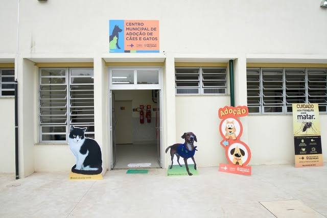
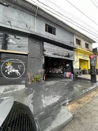

Principais Feiras
De Adoção E
De Castração
Adotar é oferecer uma nova chance.
Encontre animais que precisam de
um lar e transforme uma vida com
carinho, cuidado e responsabilidade.
ADOÇÃO

CASTRAÇÃO
